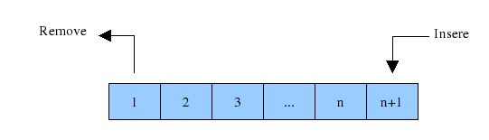

A classe array do JavaScript pode funcionar com coleção ordenada de dados, mas não tão bem com coleções não ordenadas, ou quando os valores mantidos na coleção são únicos. É por isso que o JavaScript introduziu o Set.
Set é uma coleção única de tipos primitivos e objetos, e duplicatas não são permitidas. Assim, podemos criar um conjunto vazio e adicionar objetos, ou podemos inicializar um conjunto com o conteúdo de um iterável (como um array).
Essa estrutura de dados é considerada como “coleção com chaves” (keyed collection). Coleções com chaves são, como o nome já diz, coleções que usam chaves. Estas coleções contêm elementos que são iteráveis na ordem de inserção. Portanto, são como um dicionário de idiomas, em que a busca se dá por palavras, que são os valores que buscamos, e não pela ordem dos significados
Uma lista encadeada é uma coleção linear de elementos (ou nós), em que a ordem linear não é dada por sua localização física na memória. Em vez disso, cada elemento aponta para o próximo (um ponteiro).
É uma estrutura de dados consistindo em um grupo de nós que juntos representam uma sequência. Sob a forma mais simples, cada nó é composto de dados e uma referência (ligação/conexão) para o próximo nó na sequência. Esta estrutura permite uma eficiente inserção e remoção de elementos de qualquer posição na sequência durante a iteração.
Sabe aquela fila que você pega (ou pegava) nos totens dos bancos? Pense um pouquinho como é o processo de entrada de pessoas...
Uma fila é um tipo abstrato de dados ou coleção em que as suas entidades são mantidas em ordem. As principais (ou únicas) operações na coleção são a adição de entidades à última posição, conhecida como enfileiramento (queue), e remoção de entidades da primeira posição, conhecida como desenfileiramento (dequeue).
Isso torna a fila uma estrutura de dados First-In-First-Out (FIFO). Em uma estrutura de dados FIFO, o primeiro elemento adicionado à fila será o primeiro a ser removido.
Isso é equivalente ao requisito de que, uma vez que um novo elemento seja adicionado, todos os elementos que foram adicionados antes devem ser removidos antes que o novo elemento possa ser removido.
